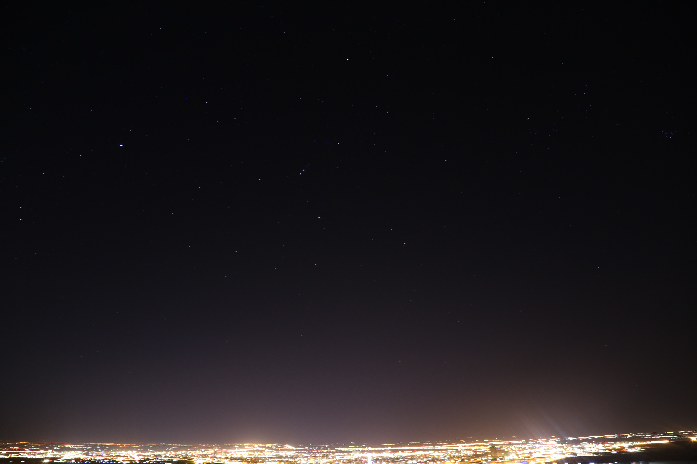

Astrophotography, or astronomical photography is the photography or imaging of astronomical objects, celestial events, or areas of the night sky.
You can find some of my shots below, this page keeps getting updated...

Orion & Pleadies
×